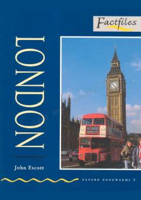

LLondon shahri tarixi va diqqatga sazovor joylari haqida ingliz tilini o'rganuvchilar uchun qo'llanma.
Ushbu kitob London shahrining tarixi, diqqatga sazovor joylari va madaniy hayoti haqida ma'lumot beruvchi o'quv qo'llanmadir. Oxford Bookworms seriyasining bir qismi sifatida u ingliz tilini o'rganayotganlar uchun soddalashtirilgan matnlar bilan taqdim etilgan.